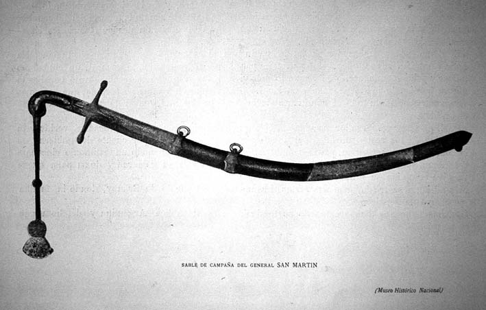

|
Relic
|
|  |
| Adolfo P. Carranza, El sable |
Welcome to the guided tour "relic", which is about to depart! Please use the "back" and "forward" buttons below to take you through this part of the exhibition. Click on the images if you want to find out more about an exhibit, or if you want to see a larger image of it.
Uprooted from its place and time, the relic is an index of absence: the melancholic object par excellence, it mourns the loss of that which it can only call forth in terms of lack, that which is no longer there to confirm and complete its meaning. It has resisted the work of time (or the 'abduction' from faraway places) only to find itself stripped of its original cause. Unlike the monument (into which the restitutive discourse of biography, history, or ethnography seeks to turn it) its constitutive incompleteness forbids it to close in on itself and to manufacture a self-sufficient, totalising image of the past or of the remote places of which it remains a solitary witness and survivor. Hence the term –and the things that are assigned to it– attains an ambiguous, unstable nature: on the one hand, in the religious or cultic sense, the relic is the object of veneration and worship, as a material trace or fragment of the sacred; in the profane (secular) sense, on the other hand, it is a mere leftover, a remainder, a 'curiosity' which time has somehow forgotten to destroy. Like all fetishes, then, relics are 'impure' objects; they are never completely 'sacred' or 'profane' but always oscillating on the borderline between the two realms. Even the most revered objects of state-worship are easily exposed as pathetic old junk by anyone who isn´t professing the cult of the nation; yet the most unseeming and humble shard of survived material may also contain unsuspected reserves of power over its beholder.
|
[ Back to index | Forward ] |